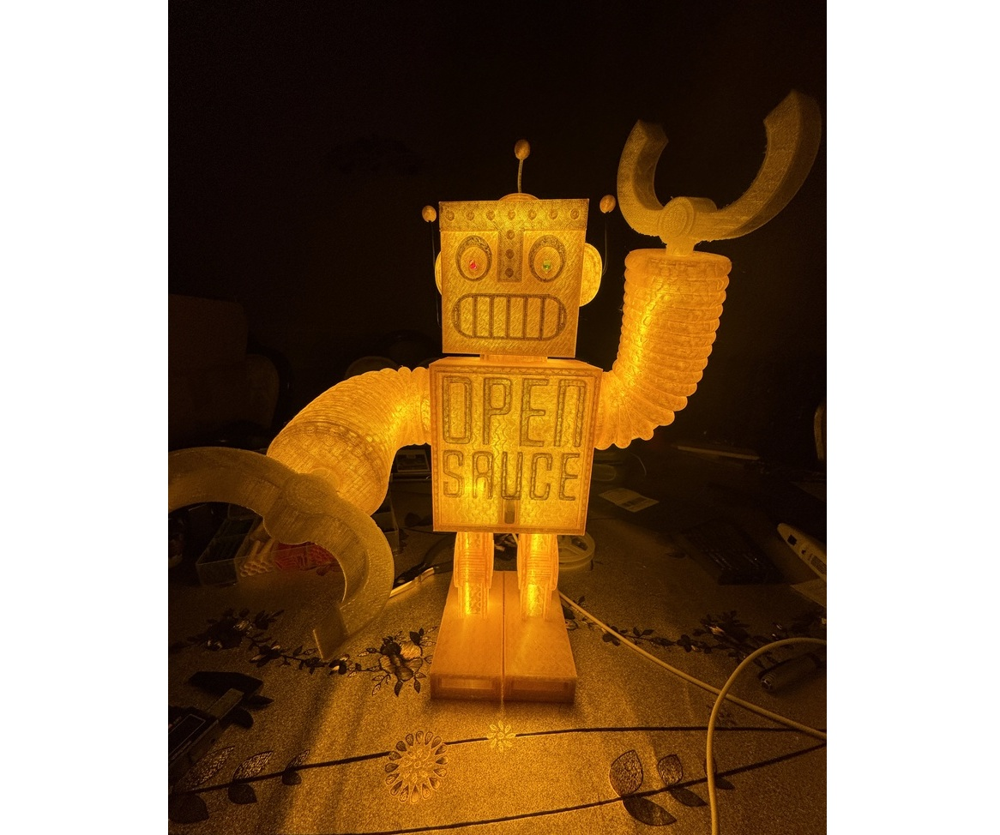
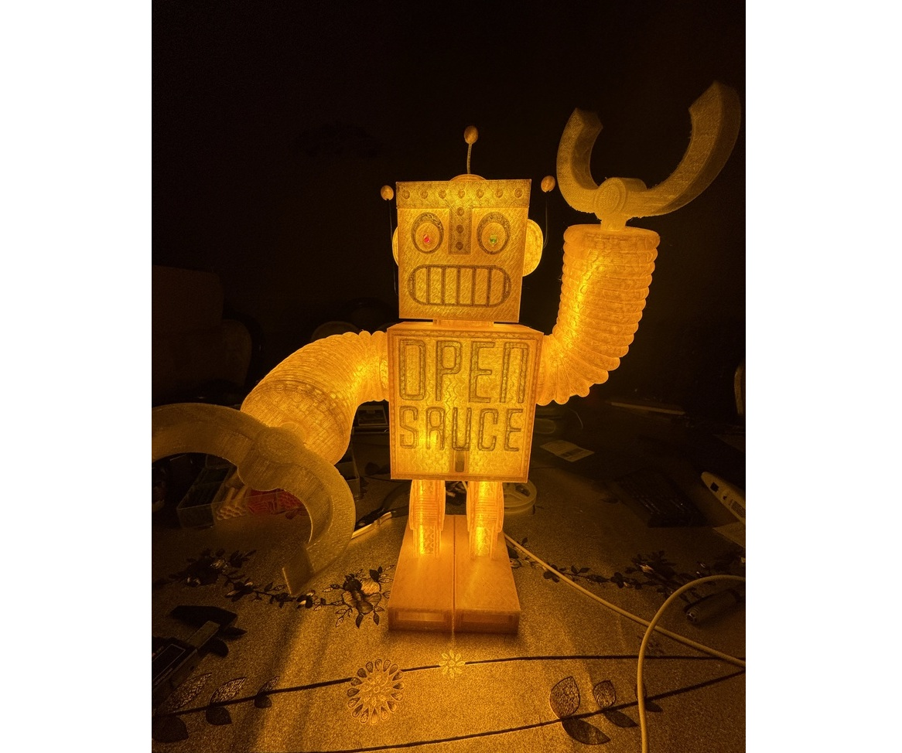

Sauce Bot
This page is for the 67kV robot that I made,


 

> This project was probably one of the most rushed and fun projects I have worked on thus far. In just a single week, I printed, tested, coded, and fried a robot capable of delivering 67kV across its antennas.
> As inspired by youtube channel "The Plasma Channel", it all starts with an arc-lighter, this alone is estimated to do about 4kV. To generate a more sizable spark gap, a Cockcroft-Walton voltage multiplier was applied at 8 stages of capacitors to generated a theoretical 67kV.
> This should have been able to produce an arc within a spark gap of 3 inches, however, my lightening tower only got about an inch of a gap. I think this was mainly due to my lack of a sizable top load to increase surface charge. Instead I just had two sharp ends of a wire pointing at each other, leading to premature corona discharge. The CW-VM was covered in epoxy but this had not helped.
> I then wanted to automate the sparking through a sequence, so an arduino would be used to display a show with a single press of a button. First, Sauce Bot would release an audio signal out the speakers from it's buttcheeks, then its eyes will light up and flash. A turn on sequence is sent to the arc-lighter to wake it up, the servos would turn the arms up, and then a spark would release. The arduino would send a turn-off signal to the lighter, arms would return down, led eyes would turn off and the audio would stop playing.
> A technicality that must be avoided was for potential voltage spikes caused by the high voltage, thus the arc lighter and the arduino were kept electrically seperated during all times of operation. A switch ganger system was design such that the two systems are joined in the off-state for simultaneous charging. Then they would be completely disconnected when switched to the on-state. I researched and learned about the optocoupler (basically an LED and photosensor), which allows me to control the arc-lighter with the arduino, without having an electrical connection.
> There were two key oversights with this project. The first was the discovery that the USB-C charging port on the primary battery also worked as a charger. So wiring the arc-lighter and logic charging ports together caused the logic port to constantly charge the arc-lighter in the off-state. The solution was to add a dedicated switch for charging.
> The second dilemma was more serious. Unit testing and testing in a wide open environment showed great promise, but in encaseing everything into a plastic shell, the high voltage sent electro-magnetic interference down some of the logic wires and forced reset the arduino. This caused the bootloader to corrupt, but the original programming remained intact. This lead to the inability to reflash the arduino, and since the arduino paused mid-spark, the shutdown sequence could not run, making it highly dangerous. There was no time to EMI shield as the flight was within less than an hour of project completion.
> The solution was to add aluminum foil balls to the antennas to reduce the rate of sparking, which was enough to keep the arduino alive... sometimes.
> I had a lot of fun at Open Sauce and eventually got to give Sauce Bot to the event's founder, and my childhood bad-role-model, William Osman!
> Since the original model was too dangerous, I made one that will shock eyes instead of people. I made the model simpler to put together, and kept it hollow for LED strips to illiminate the bot. The eyes could be wired in series with the LED strip too for added effect. The arms articulate and self lock in any orientation.